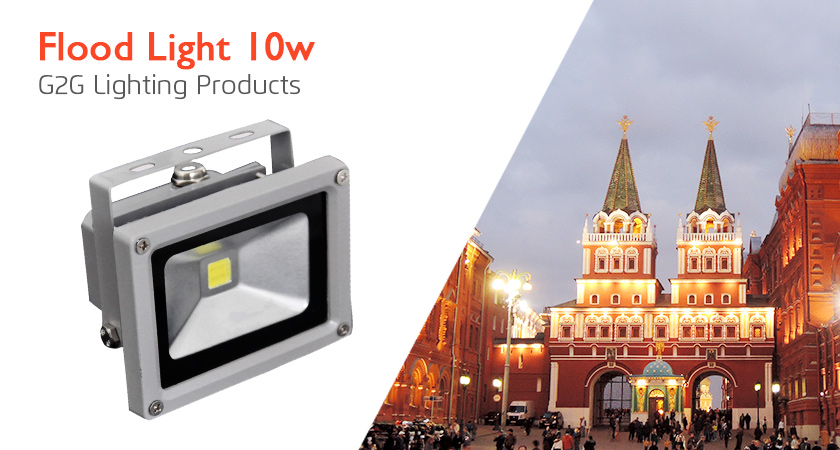
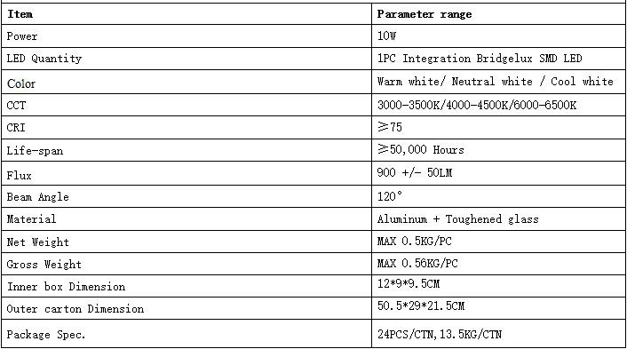
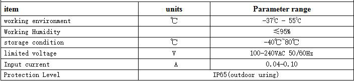

	   <div class="product-details margit-top110">
	        <div class="container">
			      <div>
				      
				  </div>
				  <div class="row bottom-line">
				       <div class="col-xs-12 col-sm-7 col-md-7">
					       <p>Integrated applications of LED light source, the unique circuit control design, reached a high efficiency and energy saving of more than 80%.
                              Ultra-high brightness, high color-rendering index, is the latest type of outdoor lighting products, long life (≥ 50,000 hours).<br>
                                 It is mainly used for outdoor flood lighting, building decoration lighting, industrial lighting, advertising lighting, ect.,a street lamp light distribution system, and can be used for road lighting.
					       </p>
					   </div>
				  </div>				 
				  				  
				  <h3 class="specification">Features</h3>
				  <div>
				      
				  </div>
				  <h3 class="specification">Technical request</h3>
				  <div>
				      					  
				  </div>
				  
				  
			</div>
	   </div>
	   
	 